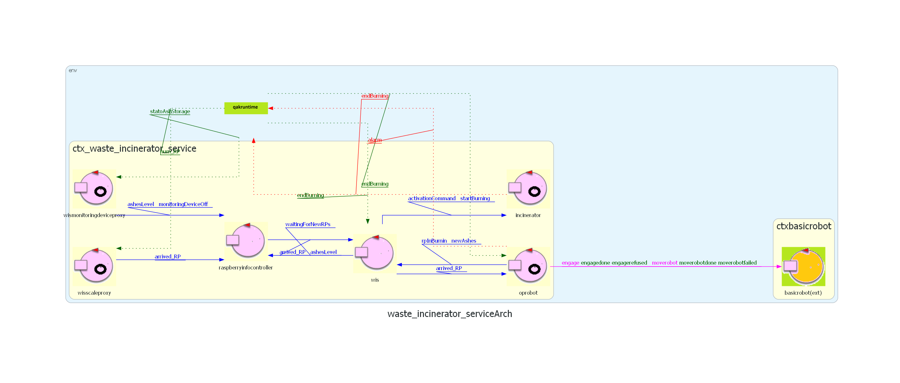

Introduzione
Un'azienda intende realizzare un WasteIncineratorService per trattare i rifiuti bruciandoli
e necessita di un servizio di sistema software (WIS) che controlli un robot (chiamato OpRobot) per spostare i rifiuti.
Requisiti
Il seguente link porta al documento dei requisiti fornito dal
cliente.
Documento requisiti
Sprint precedente
Il seguente link porta al documento dello SPRINT precedente, nel
quale si è sviluppata la ServiceStatusGUI.
SPRINT 3
Architettura iniziale di riferimento
Di seguito viene mostrata un'immagine che rappresenta l'architettura finale dello sprint precedente, che sarà quindi l'architettura iniziale di questo sprint.

GOAL
In questo SPRINT conclusivo si vuole passare dal robot virtuale del WEnv a un robot fisico (DDR).
Analisi del problema
L'unico problema da considerare è come passare dal robot virtuale al robot fisico, possibilmente senza troppo modificare l'architettura iniziale di riferimento,
in quanto l'uso di un robot fisico rispetto ad uno virtuale non dovrebbe comportare la modifica della logica di interazione dei componenti del sistema.
Per fortuna, con il BasicRobot ci è stato fornito con un file di configurazione che
permette facilmente di passare da un tipo di robot all'altro.
Ricordiamo infatti che, sin dai primi sprint, l'OpRobot è stato pensato in modo che utilizzasse il basicRobot e che non fosse una sua specializzazione. (OpRobot non è un BasicRobot)
In questo modo al'OpRobot non interessa sapere con che tipologia di robot (virtuale, DDR, nano, etc...) si interfaccia il BasicRobot e ciò ci ha permesso di passare molto facilmente al prototipo fisico.
Progetto
Non avendo dovuto modificare la parte di software in questo sprint (a parte la piccola modifica nel file di configurazione), nella fase di progettazione ci si è concentraci sull'assemblaggio dei componenti fisici del robot.
In particolare:
mapping dei pin con il ponte h:
- in1 -> pin fisico 21
- in2 -> pin fisico 19
- in3 -> pin fisico 5
- in4 -> pin fisico 3
mapping dei pin con il raspberry:
- vcc -> pin fisico 2
- trig -> pin fisico 11
- echo -> pin fisico 13
- gnd -> pin fisico 9
Piano di test
Quanto al piano di testing si è deciso di automatizzarlo il più possibile in questo ultimo sprint.
In particolare, si è deciso di effettuare test dal punto di vista applicativo, ma anche sulle immagini
che vengono direttamente fornite alla parte distribuita.
Riportiamo i test effettuati sui nodi dell'applicazione:
- WIS:Sul wis sono stati effettuati due test:
- test_newRP_MDfull: testa la situazione in cui arriva un RP ma l'ashStorage è pieno. Comportamento atteso: il robot non si muove
- test_newRP_MDok: testa la situazione in cui arriva un RP ma l'ashStorage è ad un livello normale. Comportamento atteso: il robot va a prendere l'RP
- WISFacade:Sulla wisfacade sono stati effettuati due test:
- test_facade: crea un client http mock e verifica che la facade permetta di collegarsi via HTTP
- test_wisfacade_MQTTIntegration: Crea un client websocket mock che si connette e contestualmente un altro client MQTT che notifica l'arrivo di un RP. Comportamento atteso: il client websocket viene notificato dell'arrivo di un RP
- RaspberryMock:Sulla raspberrymock sono stati effettuati due test:
- test_arrived_RP: invia un messaggio new_RP da una facademock e verifica che venga fatta una publish su un broker MQTT di testing
- test_updateStatoAshStorage: invia un messaggio statoAshStorage da una facademock e verifica che venga fatta una publish su un broker MQTT di testing
Per ovvi motivi di praticità si è deciso di mantenere il test sul raspberrymock e non su scale e monitoringdevice fisici,
oltre al fatto che il test effettuato sul raspberrymock verifica il corretto comportamento degli attori
monitoringdevice e scale, che rimangono uguali sia nel caso fisico che nel mock.
Nella fase di build dei container sono state sfruttate le multi-stage build in modo tale da creare un'immagine in cui viene fatto il build
dell'applicazione (e contestualmente, i test automatizzati relativi ad essa).
Si è deciso quindi di creare un workflow che permettesse, a fronte di ogni aggiornamento del repository del progetto, di effettuare i test
in maniera automatica, creando le immagini docker di questi tre nodi e verificando la correttezza di questo processo.
Deployment
Deployment con docker
Viste le limitazioni esposte nello sprint precedente, relativamente a docker-compose, si è
deciso di usare un orchestratore di container per effettuare il deployment su tutti i nodi
della rete in tempo reale. Questo consente anche una cifratura del traffico
tra i container senza che questa venga gestita all'esterno come viene fatta ora e permette
di avere un meccanismo di rotazione delle chiavi per diminuire la possibilità di effettuare
attacchi brute-force.
Per poter far questo però (come è stato accennato precedentemente) si è reso necessario cambiare
la modalità di interazione con i pin GPIO, passando dalla libreria RPi.GPIO alla libreria
lgpiod. Infatti, docker swarm pone delle limitazioni sulla modalità di esecuzione dei container,
non permettendo la modalità privilegiata, il che non è compatibile con la libreria python utilizzata
fino ad ora, in quanto
richiede accesso a file dentro /proc/ per verificare il dispositivo su cui si
sta effettuando l'accesso, che non vengono esposte dall'esterno in maniera diretta da docker.
Contestualmente, docker swarm non dovrebbe neanche supportare nativamente il binding di devices
dall'host sul container, ma comunque è possibile usare dei metodi per inserire i devices come volumi
e avere un container sul raspberry che intercetti le richieste di montaggio di volumi da parte dei
container e che modifichi i cgroups in maniera tale da consentire al processo che lo ha richiesto
di accedere effettivamente al device.
Qui s
i può trovare un esempio di come questo può essere fatto.
Al momento occorre, prima di procedere con il deployment, eseguire docker compose del file riportato nel commento.
Si pensa di integrare presto questa parte direttamente nel deployment con swarm.
Sull'host su cui girerà il wis eseguire:
docker swarm init
e sul nodo del monitoring device e della scale eseguire:
docker swarm join --token :2377
dove per token si intende il token generato dopo il primo comando e per wis_ip l'indirizzo
ip del nodo su cui gira il wis.
Per poter permettere l'esecuzione del container che permette di accedere al device /dev/gpiochip0, eseguire sul nodo manager:
docker node update --label-add device=rpi node_name
per ogni raspberry della rete (dove node_name rappresenta il nome del raspberry).
Successivamente, si può procedere con l'orchestrazione dei container su uno stack apposito:
docker stack deploy -c wis.yaml my_stack
Per terminare l'operazione eseguire ctrl+C e poi:
sudo docker stack rm my_stack
Per poter vedere in tempo reale i log dei container:
for service in $(sudo docker stack services --format {{.Name}} my_stack); do sudo docker service logs -f $service & done
Suddivisione dei compiti
- Analisi del problema: tutti i membri hanno contribuito.
- Progettazione: assemblaggio robot in carico a Gabriele.
- Testing: piano dei test deciso assieme. L'effettiva realizzazione è stata affidata a Gabriele.
Sprint futuri
{kind=link}